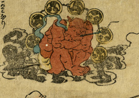

黒雲の上で膝を抱えて座る赤鬼。雷太鼓を背負っており、煙草を吸っている。
出典：親書誌：U426_nichibunken_0327：［庶民を襲う大鯰］；ショミン オ オソウ オオナマズ／日付：2014／資源識別子：U426_nichibunken_0327_0002_0000
Copyright (c)2010- International Research Center for Japanese Studies, Kyoto, Japan. All rights reserved.